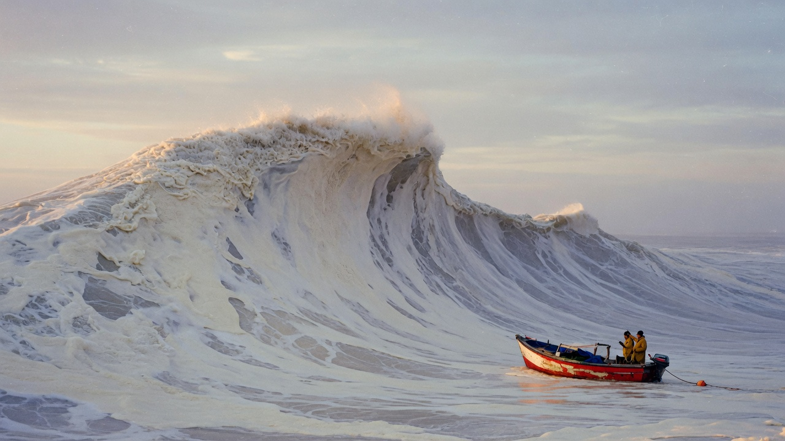

The boat that waited for the mountain of water.
They went out because the charts still called it a moderate sea, and because hunger has always been a better compass than caution. The swell arrived like a building walking.
Paper Tide is not a weather report. It is a magazine for people who measure their lives in fathoms and in the grain of old photographs. This issue is dedicated to the hour when foam looks like handmade paper, and a hull looks like a punctuation mark.
We printed this volume on stock that cockles if you breathe on it. Keep it away from actual water. Keep it close to windows. The photographs were exposed on large-format film, then scanned as if they were evidence.
There is a theory, half-serious, that every great wave is a letter the ocean failed to send. We publish the ones that still have a boat in them.